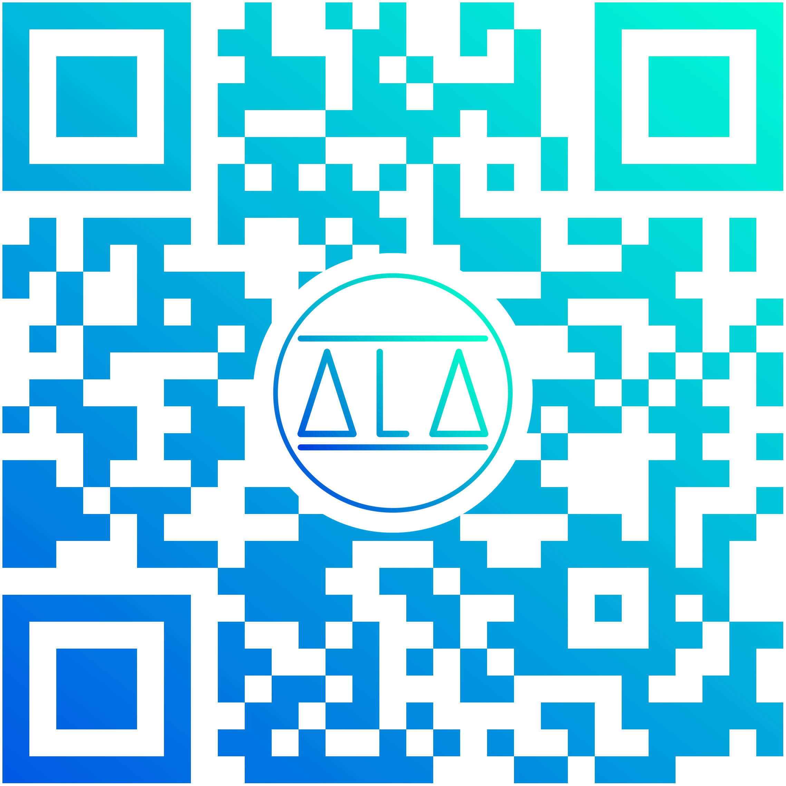

El proyecto consiste en un sistema de dispositivos bluetooth que permitan, a través de una app, el guiado
(entre otras opciones, por voz) a tiempo real. Según las necesidades del usuario, se otorgarán distintas
indicaciones para alcanzar el objetivo deseado: llegar a un destino anteriormente inaccesible, la ruta
más rápida o conveniente, una ruta turística, etc. Pretende ser una herramienta de la que el individuo
pueda depender para solucionar problemas para los que anteriormente no dispusiera de medios.
Origen de la Idea
A raíz de una conversación con una amiga invidente común en la que nos explicaba cómo, en ocasiones, le costaba
hacer uso de ciertos medios públicos, empezamos a pensar en el desarrollo de un mundo más accesible.
Tras mucho investigar, decidimos que un sistema de guiado por voz a tiempo real solucionaba gran parte
del problema, además de ser de utilidad para el público en general. Actualmente, buscamos generar un
sistema que permita el acceso a entornos antes restringidos por las condiciones del medio.
¿Cómo funciona?
El sistema se basa en la interacción entre el dispositivo móvil del consumidor y unas balizas (beacons) situadas
estratégicamente. El intercambio de información se realiza a través de una app instalada en dicho dispositivo.
Mediante ondas Bluetooth de baja energía (BLE), el dispositivo receptor lee la señal como un marcador
de posición mediante la aplicación.
La app cuenta con distintas configuraciones dependiendo de las necesidades del usuario: pudiendo seleccionar
la información concreta que desea recibir y optando a una serie de formatos en función de las necesidades
o preferencias del mismo (por voz, vibraciones, indicaciones visuales, pitidos…).
Nuestras Iniciativas
Proyecto Transporte Público
Ejemplo: Autobús
Opción actual: En el caso particular de los autobuses, en la actualidad existe un sistema
mediante el cual la persona que lo necesite, puede escuchar las próximas llegadas así como el
destino final del bus que acaba de acercarse a la parada.
Problemas: Esta situación puede resultar incómoda para el usuario, puesto que informa
a toda la marquesina. Además, requiere la memorización de la ruta por parte del usuario, dando
lugar a una experiencia menos agradable.
Nuestra solución: La instalación de dichos dispositivos en autobuses y marquesinas de
modo que, al acercarse el usuario, pueda obtener información sobre próximas llegadas así como
variaciones en la ruta (ej.: caso de obras) desde su dispositivo móvil, pudiendo hacer uso de
auriculares. Todo esto, de forma automática, sin tener que buscar la parada o la ruta en la aplicación.
Además, se avisará al usuario cuando llegue a su parada de destino, de nuevo de forma automatizada.
Proyecto Turismo
Ejemplo: Museo
Opción actual: Los tours y las audioguías, las cuales han ido evolucionando gracias
a los avances tecnológicos hasta versiones como lo es la lectura de códigos QR, son utilizados
en diversas instituciones (como museos). En el caso de estos últimos, sacándoles una foto podemos
escuchar información sobre la obra ante la que nos encontramos.

Ejemplo de código QR
Problemas: Estas opciones suelen resultar difíciles de usar para visitantes con poca
visión, ya que requieren sacar fotos o leer números impresos para marcarlos en las audioguías.
Nuestra solución: Una red de balizas permite además de un tour, el guiado por el museo
incluyendo el acceso a baños y ascensores sin perder la opción de audioguía. Con la simple aproximación
a una obra la información se activará automáticamente, facilitando así el acercamiento a sectores
de turismo y cultura, con el factor comodidad que supone poder tener este abanico de opciones
a un toque de distancia.